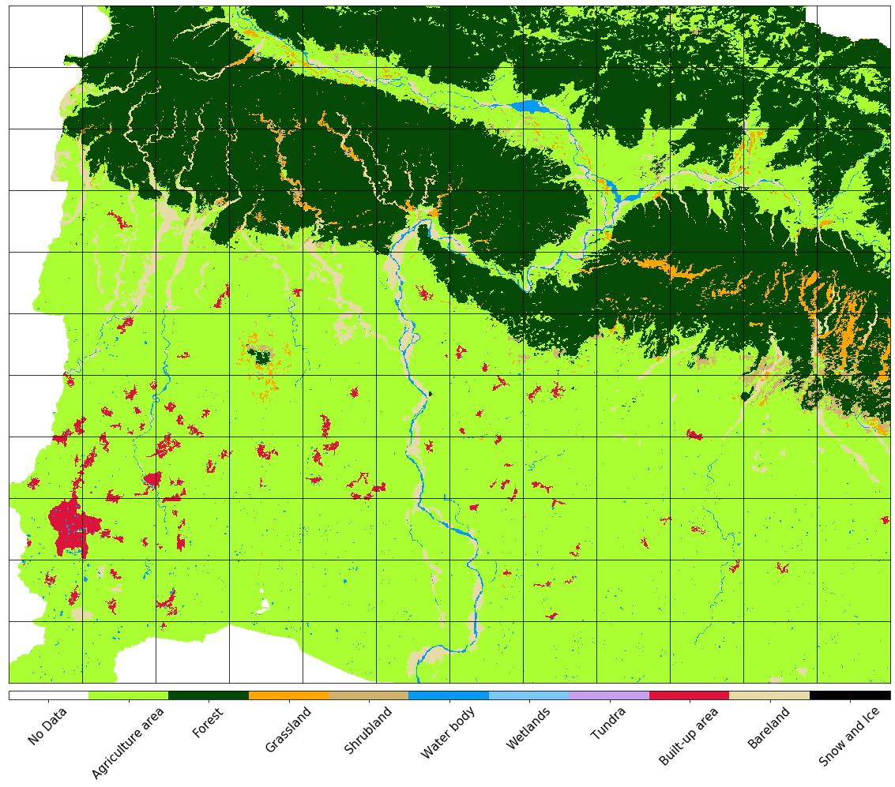
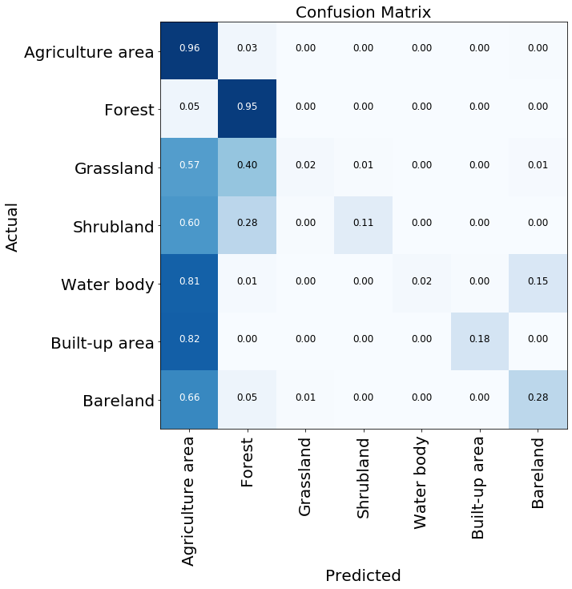
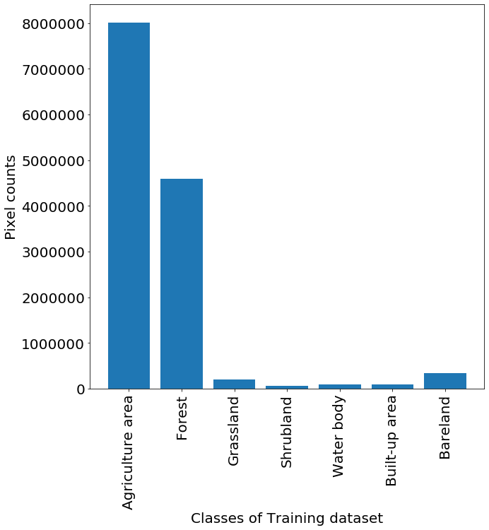

Identification of Agricultural Area in the Kamala Catchment, Nepal
Yingying Yu
www.github.com/yingying3/SynthesisProject
Land and Water
Introduction
I am a Water Resouce Modeler from Land and Water and interested in programming. I learnt basic Matlab at Uni and now would like to switch to Python.
My Synthesis Project
To identify crop arears in the Kamala Catchment, Nepal, using Machine Learning (ML) in remote sensing satellite data.
My Digital Toolbox
- Python -
Matplotlib,Numpy,Geopandas(Basics of GIS),EO - Learn(Earth observation and remote sensing),SklearnandLightGBM(ML).
My time went …
- I spent the most of my time on data preparation and manipulation.
The greatest challenges were to clean and reshape
5D dataset (pixel, time, x and y coordinates, features) into
2D (pixel * (x,y), time * features)
8 features for each pixel
Spectral Channels (B02, B03, B04, B08, B11, B12) &
2 calculated indices (Normalized Difference Vegetation and Water Index)
Data Processing
Data from Satellite Sentinel - 2, with spatial resoultion of 10 m and temporal resoultion of 16 days.
Index calculation
Remove cloud effects
Spatial interpolation
Temporal interpolation
Natural Look and normalised indices

Reference of Land Cover Map for Supervised Classification ML

Preliminary Resutls
- Data Training to create a model
- Model Validation: performance measurement for machine learning classification 
Further Improvements
- There is an unbalanced training set among different classes.
- The reference map is not up-to-date. 
My Data School Experience
- Wonderful experience to learn multiple tools: python, R and SQL
- Already have applied to my daily work. i.e. write a python script to transfer a batch of PPTs to PDFs and Word documents
- Inspired me to learn more after dataschool